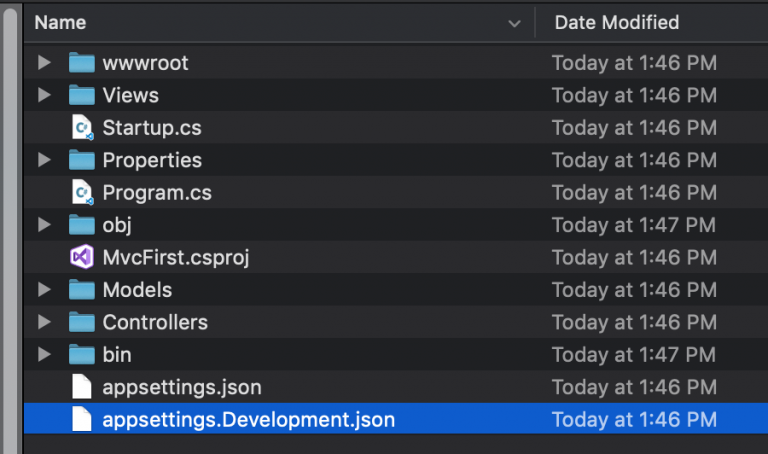
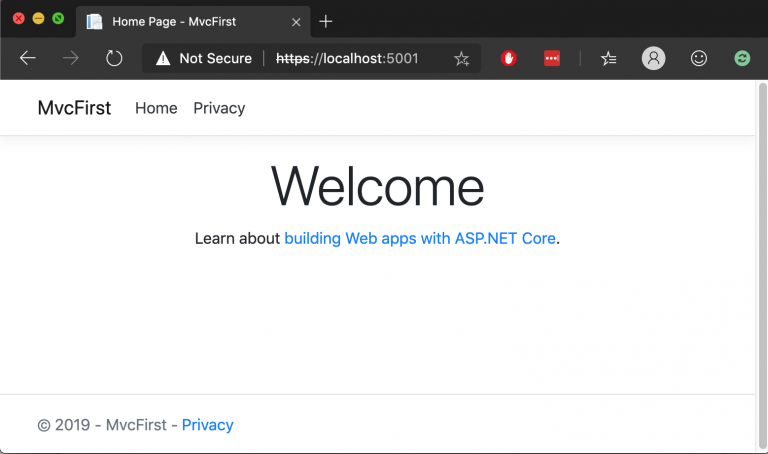

Bắt đầu với ASP.NET Core
Bắt đầu với ASP.NET Core
Vào năm 2015, Microsoft ra mắt nền tảng .NET Core – một phiên bản cross-platform của .NET framework, nay không còn phụ thuộc vào Windows APIs như trước nữa. Cùng với đó họ cũng nâng cấp bộ MVC Framework truyền thống là ASP.NET để chạy được trên nền .NET Core với tên là ASP.NET Core MVC.
Tới giai đoạn hiện tại các framework này đã qua gần hết 2 thế hệ và chuẩn bị qua thế hệ thứ 3, với nhiều cập nhật và thay đổi đáng kể về hiệu năng.
Như các bạn đã biết cũng có nhiều nền tảng xây dựng MVC Framework khác trong đó Node.js cũng là một nền tảng mạnh mẽ và có nhiều điều tương đồng với ASP.NET Core.
Thế đâu là ưu điểm, nhược điểm và lý do bạn nên bắt đầu với ASP.NET Core? Có một bài blog ở đây mà bạn có thể đọc nếu còn phân vân về 2 nền tảng này. Còn theo cá nhân mình thì lý do mình sử dụng ASP.NET Core cho các dự án như sau:
- Thứ nhất, do mình quen thuộc với .NET Stack và C#
- Thứ hai, từ khi lên .NET Core thì hiệu năng của ASP.NET cũng không thua kém gì Node.js
- Thứ ba, so với Node.js thì ASP.NET Core có vẻ ít “thư viện” hơn, tuy nhiên hầu hết những gì chúng ta cần đều được xây dựng từ nhà Microsoft ra, không phải phụ thuộc vào kho “thư viện” cộng đồng trên npm.
Nói đi thì cũng nói lại, ASP.NET Core có một số hạn chế như ít tài liệu, cộng đồng không đông bằng, ít các bộ thư viện kết nối CSDL (như Oracle)…
Vậy để bắt đầu tìm hiểu cũng như sử dụng ASP.NET Core để xây dựng Web site hoặc APIs bạn cần những điều gì? Sau đây là một số yêu cầu cũng như các bước chuẩn bị để có thể làm việc với nền tảng này:
Yêu cầu
Có kinh nghiệm lập trình với ngôn ngữ C#
Hiểu biết về các hệ quản trị CSDL
Hiểu biết về công nghệ Web, Server,…
Có kiến thức về xây dựng frontend web (HTML, CSS, Javascript) hoặc mobile
Công cụ & chuẩn bị
Máy tính chạy Windows hoặc MacOS Cài đặt .NET Core SDK 2 theo hướng dẫn tại https://dotnet.microsoft.com IDE có thể sử dụng Visual Studio 2019 hoặc Visual Studio Code (khuyên dùng), các 2 đều hỗ trợ miễn phí trên Windows và MacOS
Thực hành, tạo project đầu tiên
- Mở Command Prompt (Windows) hoặc Terminal (MacOS), trỏ tới thư mục sẽ chứa project của bạn
- Tạo project với tên là MvcFirst bằng lệnh dotnet new mvc -o MvcFirst
- Trỏ và thư mục với lệnh cd MvcFirst
- Chạy thử ứng dụng ASP.NET Core của bạn với lệnh dotnet run
- Kết quả bạn có thể kiểm tra trên trình duyệt bất kỳ với url là: http://localhost:5000 hoặc https://localhost:5001 (bỏ qua lỗi https nếu có)
- Bạn có thể kiểm tra code của project hoặc mở lên với IDE của mình 
Next Steps
Mình sẽ chia sẻ thêm các bài viết hoặc video về cách xây dựng ứng dụng ASP.NET Core MVC mà chủ yếu tập trung vào xây dựng APIs cho Single App hoặc Mobile App với các chủ đề như:
Routing
Controllers và Actions
View & Razor
RESTful API với SQL Server và Entity Framework
Filters
ASP.NET Core Identity Framework
Authentication
…
— HẾT —
.PS: Dành cho bạn nào quan tâm, mình có các khoá học dạng tư vấn và hướng dẫn online như sau
- C# cơ bản – nâng cao: Miễn phí, dành cho các bạn mới bắt đầu học lập trình. Tuỳ vào mục đích, trình độ và thời gian của mỗi cá nhân mà có các hướng dẫn phù hợp. Nếu cần có thể đến thực tập tại công ty mình. (Số lượng có hạn)
- Xamarin Forms: Có phí (khoá đầu tiên nên sẽ là 3.000.000VNĐ/bạn và tối đa chỉ 5 bạn). Hướng dẫn, hỗ trợ, tư vấn, để các bạn có thể xây dựng được một ứng dụng di động cross-platform mobile Android, iOS hoàn chỉnh.
- Như mình chia sẻ thì lập trình di động đã khó và làm cross-platform sẽ khó hơn rất rất nhiều, bạn phải đầu tư từ phần cứng đến phần mềm đến thời gian. Nên các bạn cân nhắc.
- Thời lượng sẽ tuỳ thuộc vào mỗi cá nhân, nhanh nhất có thể là 1 tháng nếu các bạn vững.
- ASP.NET Core API: Có phí (khoá đầu tiên nên sẽ là 1.500.000VNĐ/bạn và tối đa chỉ 5 bạn) Hướng dẫn, hỗ trợ, tư vấn, để các bạn có thể xây dựng được một bộ web API dành cho Single App hoặc Mobile. Tư vấn xây dựng backend cho doanh nghiệp trên Azure. Thời lượng sẽ tuỳ thuộc vào mỗi cá nhân, nhanh nhất có thể là 1 tháng.
** Lưu ý: Các trao đổi, hướng dẫn chủ yếu là online, qua các tài liệu, bài tập, project, call,… nếu cần thiết sẽ gặp offline (Tp HCM). Các khoá học sẽ bắt đầu ngay sau khi bạn đăng ký. Bạn có thể tham khảo hoặc học thử qua các video của mình: https://www.youtube.com/channel/UChbpU0RV-r_u5qvKFYucnIg. Riêng lớp C# các bạn phải commit từng nội dung hoặc bài tập rõ ràng nếu không sẽ buộc rời lớp.